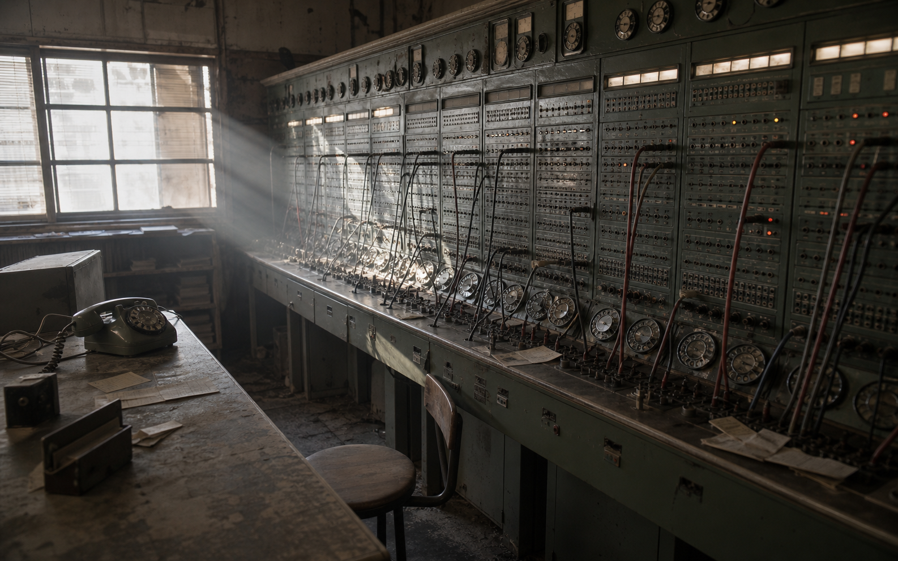

SWITCHBOARD LOGIC / TEL-0426
朝霧交換局
40:00古い交換台に残った呼出札を、会話の内容に合う宛先へ接続してください。4本すべて正しく繋ぐと、最後の内線番号が開きます。
交換台
札を選び、宛先を押してください。

SWITCHBOARD LOGIC / TEL-0426
古い交換台に残った呼出札を、会話の内容に合う宛先へ接続してください。4本すべて正しく繋ぐと、最後の内線番号が開きます。
札を選び、宛先を押してください。